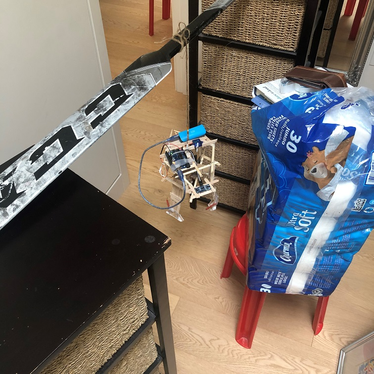
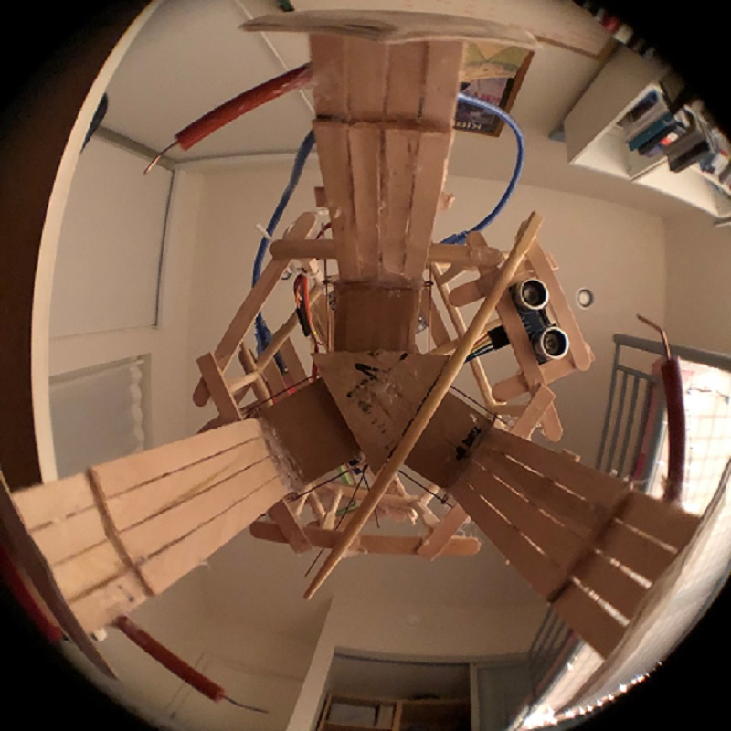
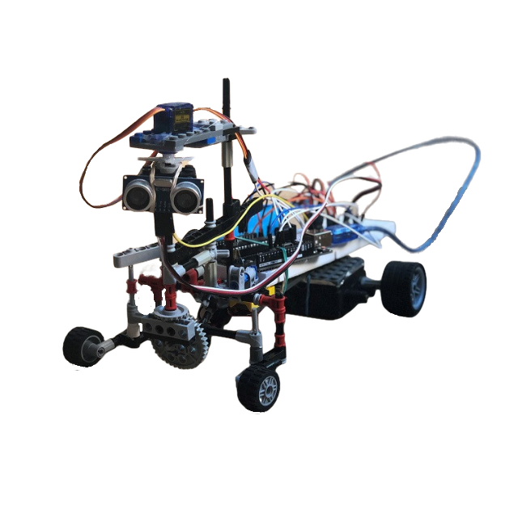

UBC Thunderbots
UBC Thunderbots is an engineering student design team that designs, builds, and programs eight autonomous robots to compete in the Small Size League of the International Robocup Federation. In other words, we build a team of robots that play soccer. If you're curious, they play with golf balls that are colored orange.
Our robots are built from the ground up and play fully autonomously. We have our own software architecture that runs the decision making AI, we design custom PCBs, and we also design and manufacture our own hardware using Solidworks and at student machine shops. All our work is open source so drop by our github if you're interested in what we do: UBC Thunderbots
Our robots are built from the ground up and play fully autonomously. We have our own software architecture that runs the decision making AI, we design custom PCBs, and we also design and manufacture our own hardware using Solidworks and at student machine shops. All our work is open source so drop by our github if you're interested in what we do: UBC Thunderbots

I joined the team as a mechanical member in my first academic year, and have since travelled with the team to compete in Bangkok, Thailand, optimized the chipping subsystem, and presented our work at outreach events.
Currently, I am leading the redesign of the dribbler subsystem and integration between the mechanical and electrical subteams for the redesign of the breakbeam subsystem. Particularily, I am focusing on the research and development of the dribbler damping system; incoporating the use of compliant mechanisms.
Currently, I am leading the redesign of the dribbler subsystem and integration between the mechanical and electrical subteams for the redesign of the breakbeam subsystem. Particularily, I am focusing on the research and development of the dribbler damping system; incoporating the use of compliant mechanisms.
The dribbler subsystem is what allows each individual robot to handle the ball. It usually consists of a roller which continuously exerts an inward spin on the ball. An important property of the dribbler that I am currently working on is dribbler damping.
Damping plays a crucial role for a successful dribbler. A robust damper allows a robot to catch and dribble a ball without furious vibrations that may cause a ball to release itself from the robot. A successful damper is one that is tuned such that the robot is able handle the ball while executing specific plays, and perform well under a variety of conditions. These plays include lateral and rotational movement, as well as static handling of the ball.
Damping plays a crucial role for a successful dribbler. A robust damper allows a robot to catch and dribble a ball without furious vibrations that may cause a ball to release itself from the robot. A successful damper is one that is tuned such that the robot is able handle the ball while executing specific plays, and perform well under a variety of conditions. These plays include lateral and rotational movement, as well as static handling of the ball.
On the left is the seventh iteration of a flexure I have designed to be used as a damper.
The motivation to design a damper using compliant mechanisms is primarily due to its flexible nature in design. Because of the chaotic nature of the sport, it's impossible to achieve a critically damped system for all situations. However, it is still important to be able to tune the damper such that we get an overdamped system that is near critically damped for most scenerios we know the robots will encounter.
Compliant mechanisms offer that flexibility. By altering the design slightly, we can achieve a component with darastically different properties with ease and low costs.
I have composed a write-up for our dribbling subsystem which has detailed explanations of how the system works and design rationals: Dribbler Write-Up
The motivation to design a damper using compliant mechanisms is primarily due to its flexible nature in design. Because of the chaotic nature of the sport, it's impossible to achieve a critically damped system for all situations. However, it is still important to be able to tune the damper such that we get an overdamped system that is near critically damped for most scenerios we know the robots will encounter.
Compliant mechanisms offer that flexibility. By altering the design slightly, we can achieve a component with darastically different properties with ease and low costs.
I have composed a write-up for our dribbling subsystem which has detailed explanations of how the system works and design rationals: Dribbler Write-Up
Claw
A mechanical claw built for my UBC APSC 101 class.
This was a team project and consisting of using an Arduino starter-kit and common household materials. Why I specifically chose to include this team project in my portfolio is because I personally designed and built this claw for the team. I was very proud of the final product and its performance in the class competition. The program was written both by me and another student.
This was a team project and consisting of using an Arduino starter-kit and common household materials. Why I specifically chose to include this team project in my portfolio is because I personally designed and built this claw for the team. I was very proud of the final product and its performance in the class competition. The program was written both by me and another student.


The claw was built using electonic devices included in the Arduino Starter-Kit, and the body was build with common household items: popsicle sticks, tape, wooden chopsticks, etc.
The claw activates by the distance from which a sonar sensor is from the ground. The claw open/closes by a servo, which pulls vertically on three arms that move laterally. The three arms are connected to the servo via a fishing line.
The claw activates by the distance from which a sonar sensor is from the ground. The claw open/closes by a servo, which pulls vertically on three arms that move laterally. The three arms are connected to the servo via a fishing line.


I was very proud of this project since the product was very successful and it looks awesome. I designed entirely, and built the claw mainly by myself; however, I give credit to my team for creating the engineering drawings, poster, program, and their physical help during class time.
On the left is a picture of my room when building the claw dated: Feb 5, 2022 | 2:23am. While I usually sleep at or before midnight, I had a lot of fun building and testing this claw - so much that I willingly stayed up late even though it was not due the next day.
The image on the bottom is a view of how I took the videos of my claw, presented in the gifs above. My phone would lean against my wallet, above the tissues to get a still shot.
On the left is a picture of my room when building the claw dated: Feb 5, 2022 | 2:23am. While I usually sleep at or before midnight, I had a lot of fun building and testing this claw - so much that I willingly stayed up late even though it was not due the next day.
The image on the bottom is a view of how I took the videos of my claw, presented in the gifs above. My phone would lean against my wallet, above the tissues to get a still shot.
Arduino Car
Autonomous vehicle built for my grade 12 capstone project.
This project consisted of using an Elegoo microcontroller + starter-kit and old toy parts + lego. It was my first time using a microcontroller to create a moving device. Everything was self-taught, self-built; and it was the project that helped me make my decision to go into engineering.
This project consisted of using an Elegoo microcontroller + starter-kit and old toy parts + lego. It was my first time using a microcontroller to create a moving device. Everything was self-taught, self-built; and it was the project that helped me make my decision to go into engineering.


In december 2020, I was introduced to a thing called an Arduino by Mark Rober - a popular youtuber - who was advertising a class he was teaching built around teaching people how to build cool devices using arduino and raspberry pi. It was a $500 course which I obviously wasn't willing to spend because I thought to myself that, "I could learn this all by myself." And so, I decided to do my own research on what an Arduino is and to make Arduino controlled thing myself.
Instead of buying an Arduino Starter-Kit, I bought an amazon alternative Elegoo Starter-Kit - which was basically the same thing, but cheaper.
I incoporated this as my capstone project for highschool; and from there on, I decided to make a self-driving car - a car that avoids walls.
At the time, I knew the Java programming language; and luckily, that was enough to get me started in teaching myself C which is used in programming an Arduino.
Instead of buying an Arduino Starter-Kit, I bought an amazon alternative Elegoo Starter-Kit - which was basically the same thing, but cheaper.
I incoporated this as my capstone project for highschool; and from there on, I decided to make a self-driving car - a car that avoids walls.
At the time, I knew the Java programming language; and luckily, that was enough to get me started in teaching myself C which is used in programming an Arduino.
I followed many YouTube tutorials on how breadboards and IO devices work. And my school's robotics team was generous enough to provide me with their recycling bin which consisted of old electronic VEX motors, which I figured how to make combatible with my microcontroller.
However, the greatest challenge came when building the chassis. Specifically, finding parts. I scoured my old toys and legos to find parts that could help me build a working car axle. This was the greatest challenge as I didn't have enough of the same parts and had to find alterntive ways of doing things. But I personally think it's the coolest part of the car; and the part I'm most proud of besides the final product.
The vehicle is suppose to detect whether it is going to hit a wall or not, determine whether there is more space on the left or right, and to do a two-point turn to the side determined. The video on the right is the first successful run of the car working as designed.
However, the greatest challenge came when building the chassis. Specifically, finding parts. I scoured my old toys and legos to find parts that could help me build a working car axle. This was the greatest challenge as I didn't have enough of the same parts and had to find alterntive ways of doing things. But I personally think it's the coolest part of the car; and the part I'm most proud of besides the final product.
The vehicle is suppose to detect whether it is going to hit a wall or not, determine whether there is more space on the left or right, and to do a two-point turn to the side determined. The video on the right is the first successful run of the car working as designed.
Box Car
Line following robot for second year project course.
This project consisted of using an arduino microcontroller, L298N H-Bridge Board, FA-130 RA brush motor, and QRD1114 Reflective Sensors.
This project consisted of using an arduino microcontroller, L298N H-Bridge Board, FA-130 RA brush motor, and QRD1114 Reflective Sensors.


Roblox Game Development
Standing as one of my more ambitious projects, I've began developing games on the Roblox Studio Platform in the summer of 2021. The programming language Lua was self-taught and used to develop games that are currently still in development. I currently host two public games:
Blox Life
Treaasure Hunt
Blox Life
Treaasure Hunt
Balancing Desk Toy
Created in my metalwork class, this is a balancing desk toy and a piece of art. The initial design brief was to create a balancing toy but with cylindrical weights on both ends, and a sheetmetal cutout as the balancing center piece. However, I took the extra step to replace one of the weights with a 3D person snowboarding instead.


